Schema
The entity relationship diagram encodes the constraints above — one tenant per apartment, one employee per service request, many apartments per property.

Database Design
Requires Microsoft Access (Windows). Access isn't available on macOS — the walkthrough below covers everything the file contains.
R2E, LLC is a fictional property management company created for a graduate database management course. It manages several residential buildings in Long Island City, Queens, and had spent five years tracking properties, tenants, service requests, and employees in Excel — workable at first, unreadable once the spreadsheets grew.
The database had to capture three sets of rules:
Each property contains many apartments, and each apartment leases to a single tenant. A household may have several occupants, but the lease sits under one name. Occupancy status matters since units can sit vacant, alongside tenant name, contact information, and household size.
Repairs are handled in-house — broken appliances, leaks, plumbing. Each request records the apartment it came from, the type of work, and the employee assigned. An employee can hold many open requests, but every request resolves to exactly one employee, and each distinct service requires its own request.
Contact information, home addresses, and job roles, so requests route to the right person.
The entity relationship diagram encodes the constraints above — one tenant per apartment, one employee per service request, many apartments per property.
Data entry and navigation. Four forms handle everything staff need to put into the system, structured so information is captured consistently rather than typed into whichever spreadsheet column happened to be free.
The central navigation interface. It provides structured access to data entry forms and reporting modules, letting users manage tenant records, service requests, and employee information without hunting through raw tables. Organizing workflows into clear menu paths improves usability and reduces operational confusion.
Captures maintenance requests submitted for individual units, including tenant details, issue type, and assigned employee. This structured entry process lets management track work orders, monitor completion timelines, and maintain accountability across maintenance operations.
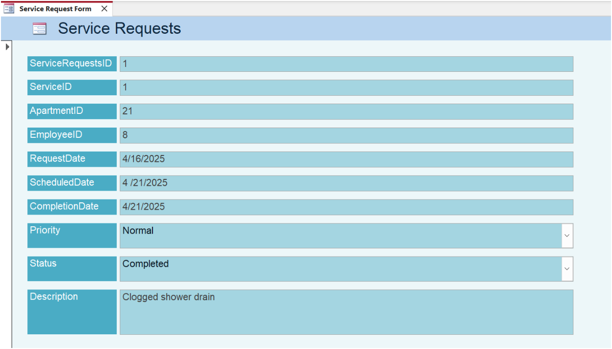
Collects the details needed for every tenant: full name, email address, phone number, monthly rent, household size, and lease start and end dates. Keeping this in one structured form is what makes the tenant directory and occupancy tracking possible downstream.
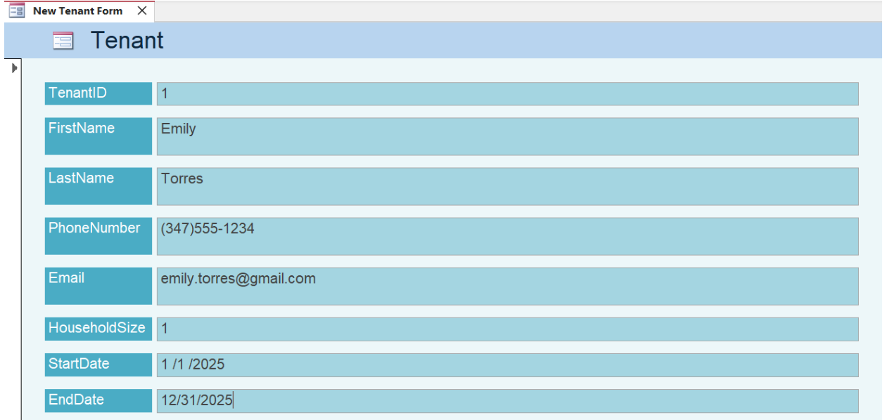
An onboarding form capturing full name, job position, phone number, email address, and home address. Job role is the field that matters most operationally — it's what allows service requests to be routed to someone qualified to handle them.
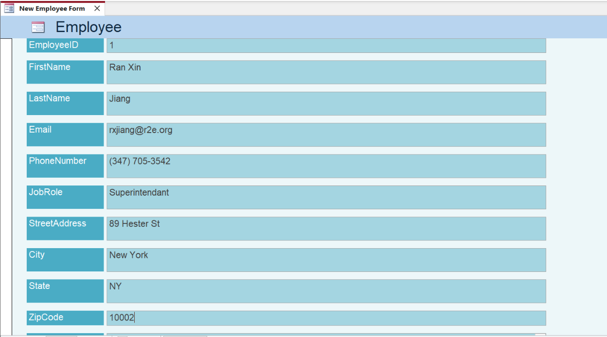
Operational monitoring. Four reports turn the stored records into the views management actually needs — who lives where, what's broken, who's fixing it, and how long it's taking.
An alphabetical list of all tenants organized by building, with full name, unit number, phone number, email address, and lease start and end dates. Staff can verify occupancy at a glance and keep contact records current without opening the underlying tables.
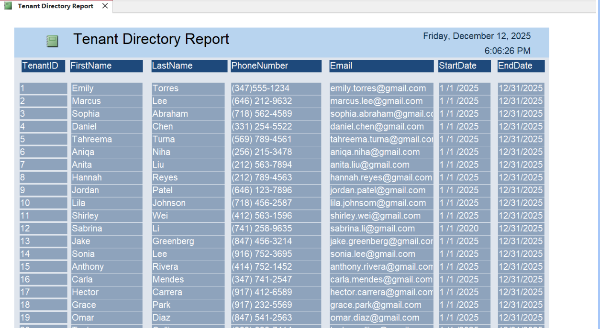
An overview of maintenance activity across each property — the number and types of service requests submitted monthly, and the average time taken to complete them. Tracking completion speed and flagging properties with unusually high request volumes helps management spot problem buildings and judge when preventative maintenance or renovation is the better call.
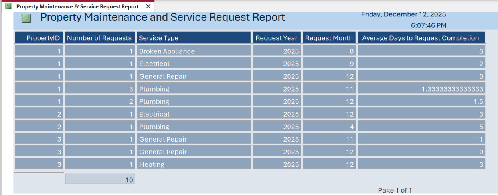
A summary of each staff member's workload and productivity across the year: service requests completed, average time to resolve, types of tasks handled, and outstanding assignments. Surfacing completion rates and efficiency trends gives management a defensible basis for evaluating performance and making decisions on bonuses, raises, and staffing.
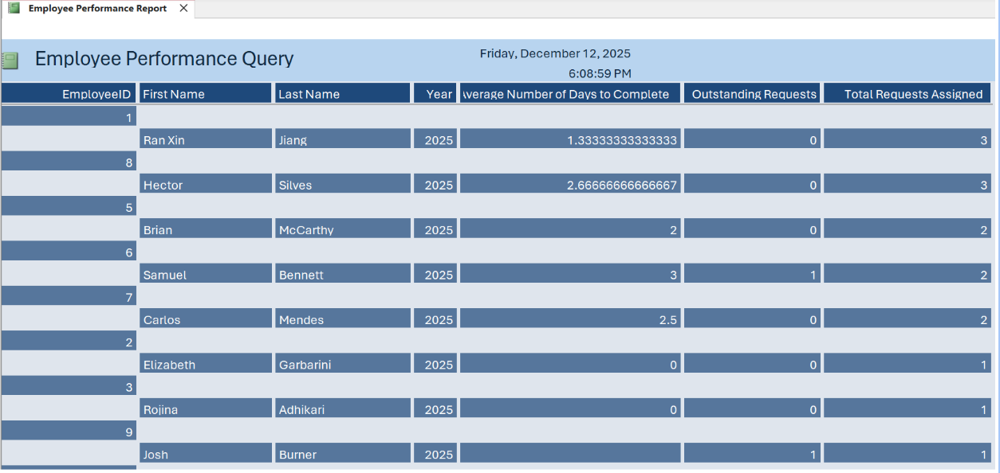
Real-time visibility into unresolved maintenance tasks across properties, showing submission date, service type, assigned employee, and current status. This is the report that catches requests slipping through the cracks.
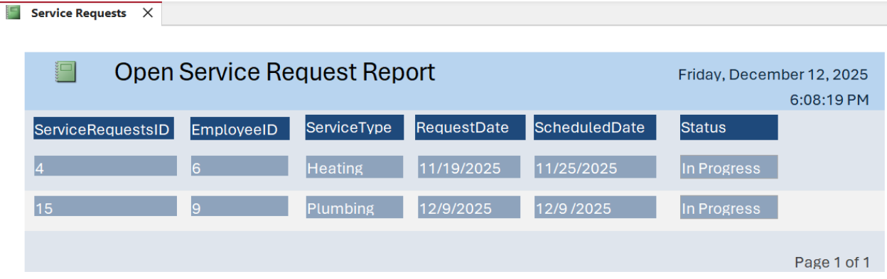
The analytical layer underneath the reports. Each query answers one operational question, and together they cover the full lifecycle of a service request from submission to completion.
Identifies every service request currently open and not yet completed, giving management real-time visibility into outstanding issues so urgent requests can be prioritized, workload distribution monitored, and nothing overlooked.
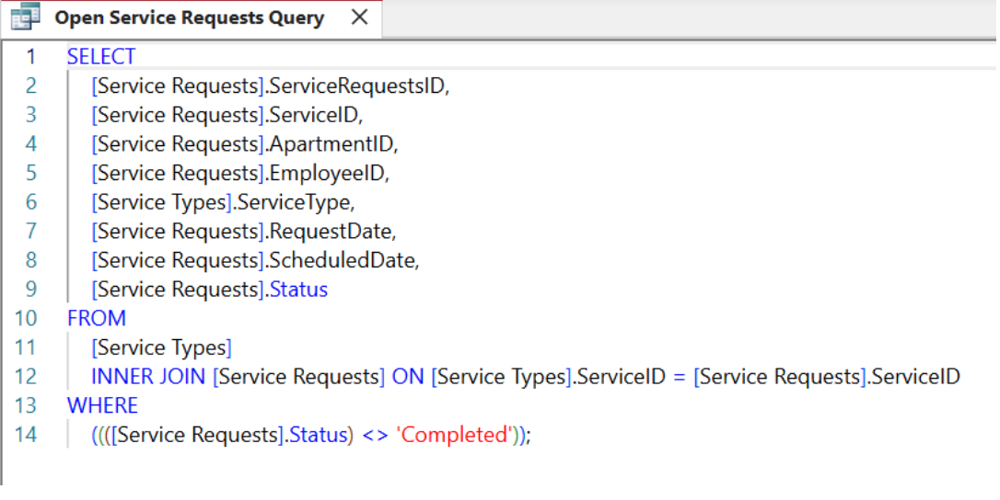
Retrieves completed requests alongside service type, assigned employee, apartment ID, and total completion time — the basis for evaluating employee responsiveness and whether work is being finished within a reasonable window.
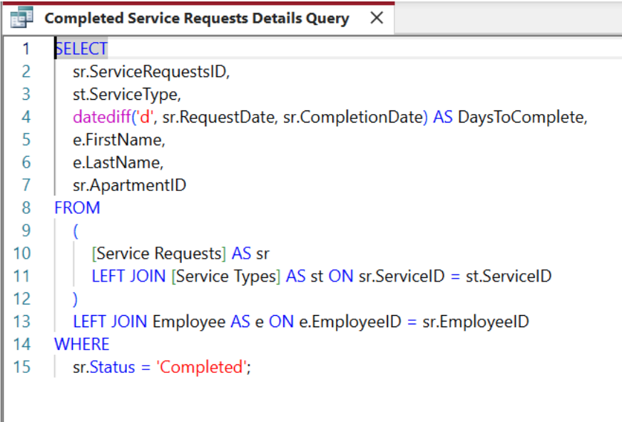
Calculates average completion time for each service type. Knowing which categories of request consistently take longest is what lets management reallocate resources, adjust staffing, and identify where the process is bottlenecked rather than guessing.
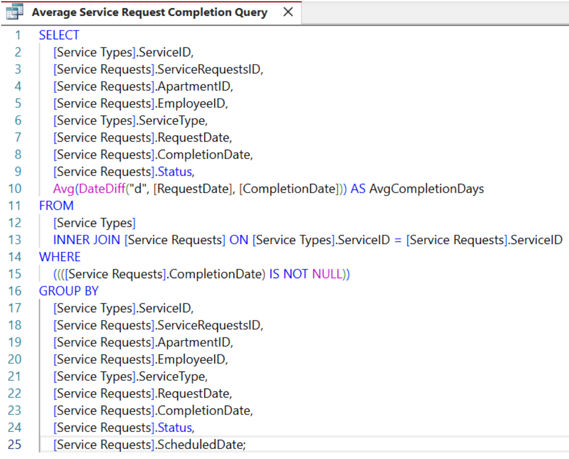
Summarizes total service requests received per property each month and the average days required for completion, grouped by service type. This is what makes property-level comparison possible — detecting recurring maintenance patterns and supporting data-driven decisions on preventative maintenance and resource allocation.
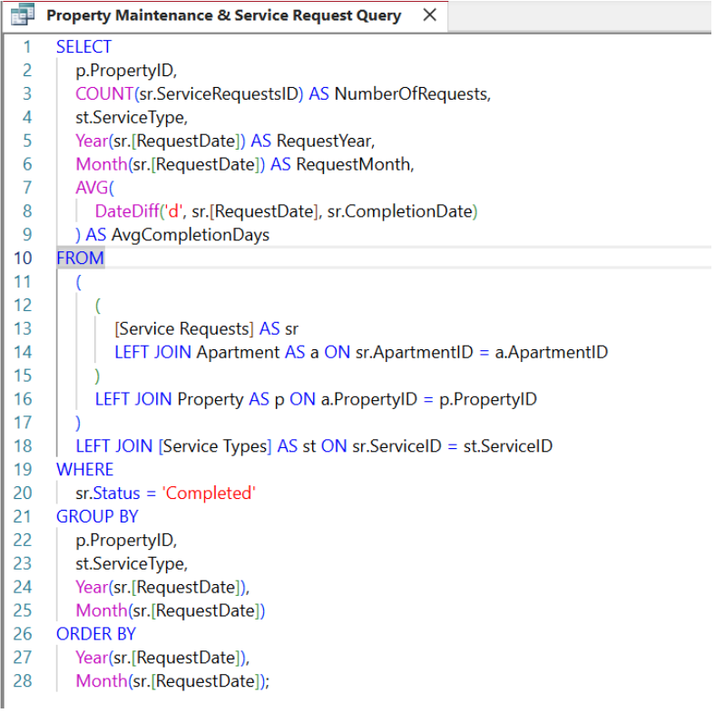